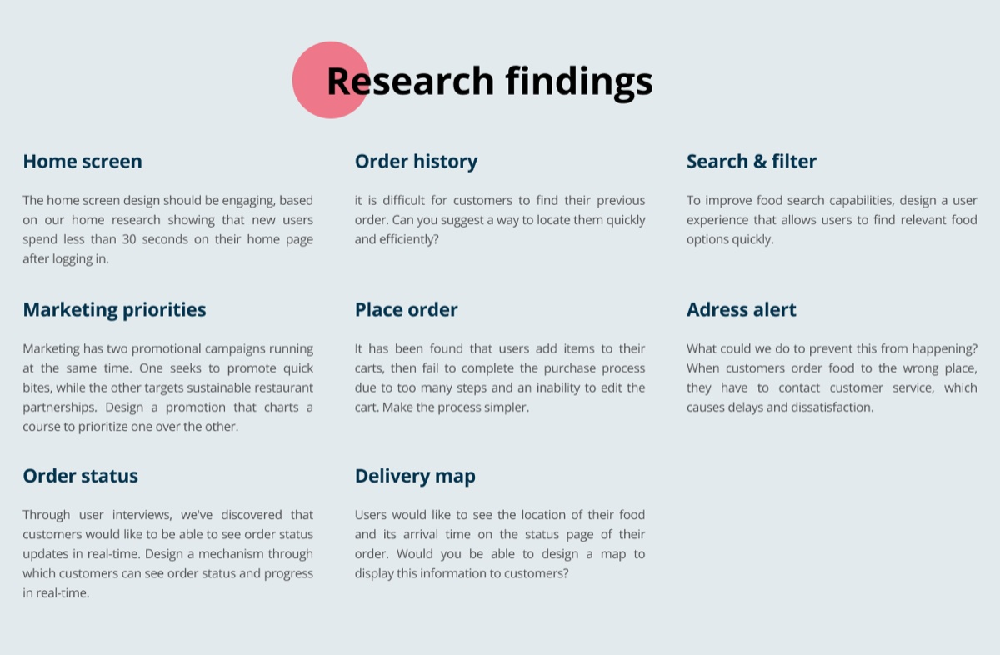
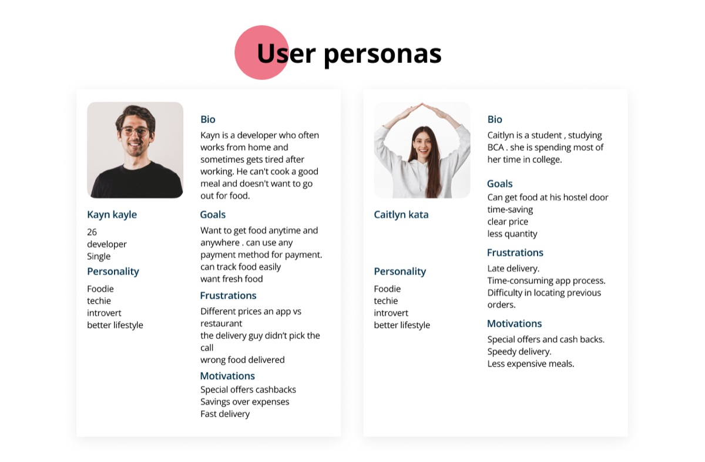
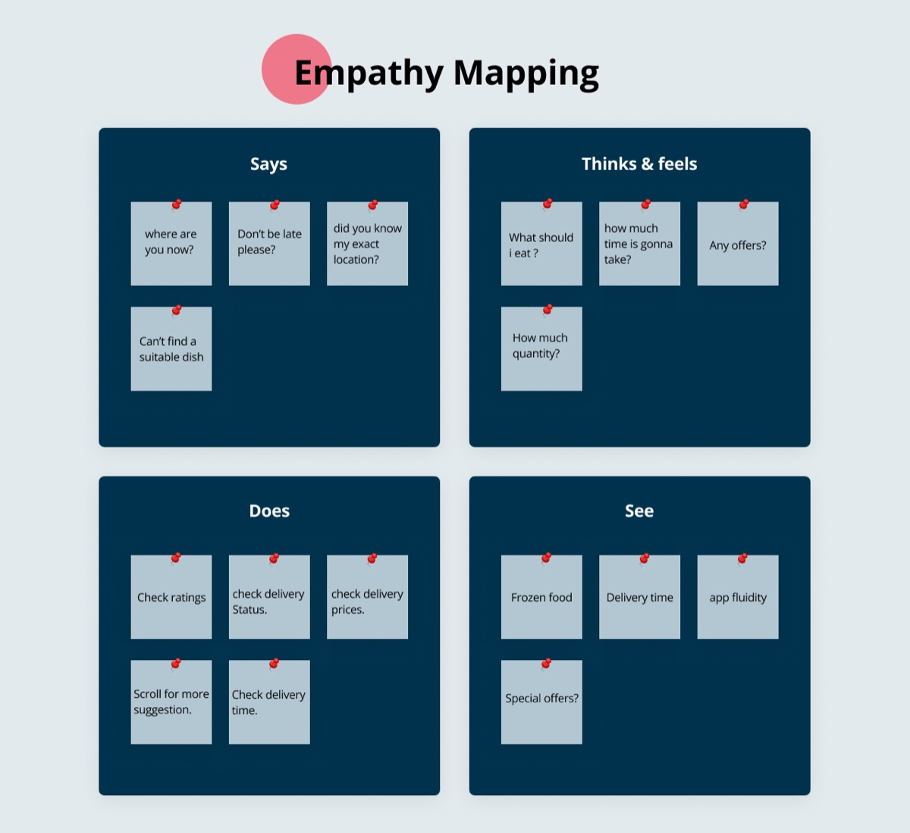
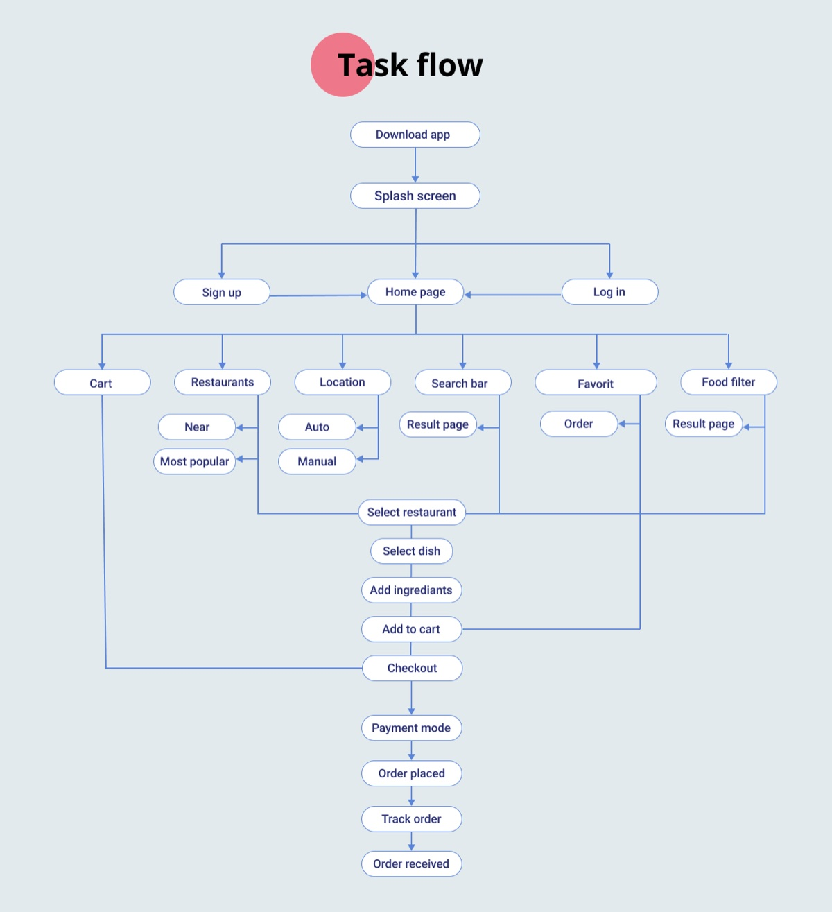
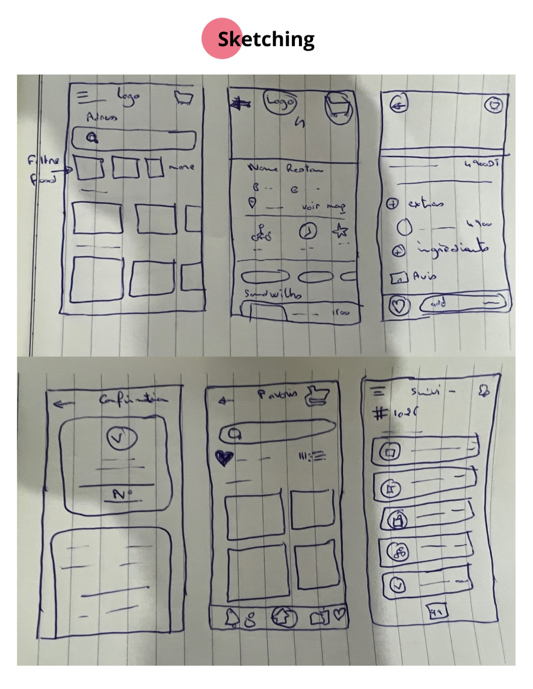
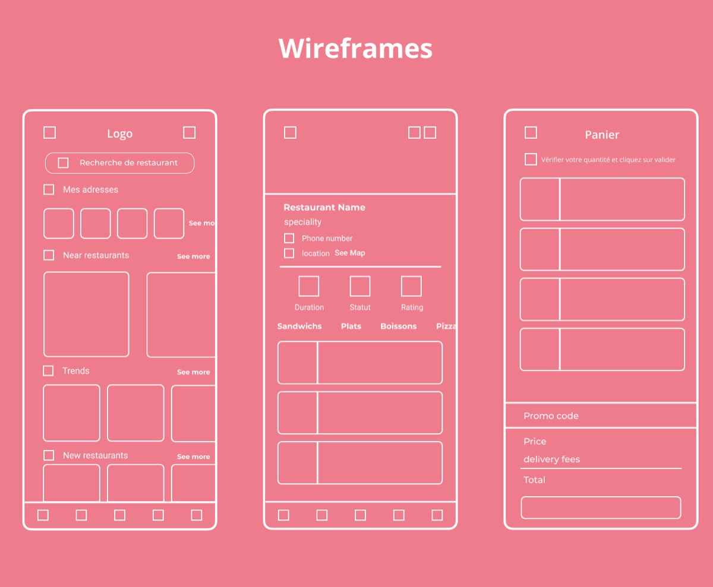
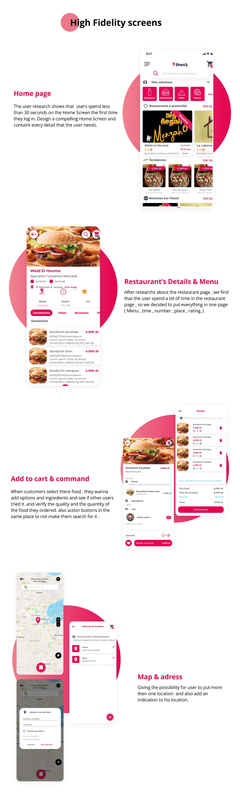

01 The advantage
Fissa3 sets up an offer adapted to each restaurant's needs, with more than 100 delivery people at their disposal. It gives restaurants visibility and free advertising through its social networks and its platform, helping them increase their sales.
It's an easy-to-use restaurant application that lets you receive your orders, ensure the traceability of each order, and consult the history. Each order is paid as soon as the customer leaves the restaurant, so you can keep close follow-up of your till. If a delivery is made from the platform, Fissa3 takes only 5% in fees — and the service is free for the first 45 days.
02 Research
I ran user research to elicit information from a wide range of perspectives on how to develop a new strategy. For the user experience design, I focused on mobile: the user experience plays a crucial part in the visual side of an app. For the visual design, the goal was to create an intuitive, user-centric interface that is convenient and appealing.



03 Solving the problem
- Restaurant profile — Customers can easily find or order from a restaurant when they can see its profile and review it.
- Prognostic search — Filter and predictive search options help users find what they are looking for quickly and easily.
- Live updates — Users can track the delivery person so they receive the order right at their doorstep.
- Push notifications — Notify users of new offers or food order histories to increase the app's usability.
- Geo location — Customers can track their meal's location in real time through GPS.
- Order customization — Customers can customize their orders based on their needs.

04 Design process


05 Hi-fi & prototype

Explore the interactive prototype: